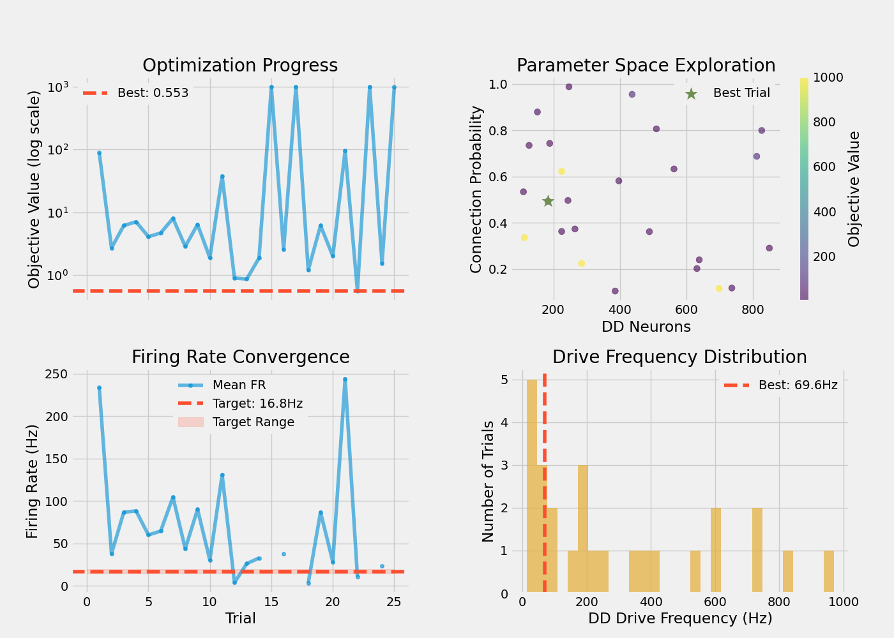
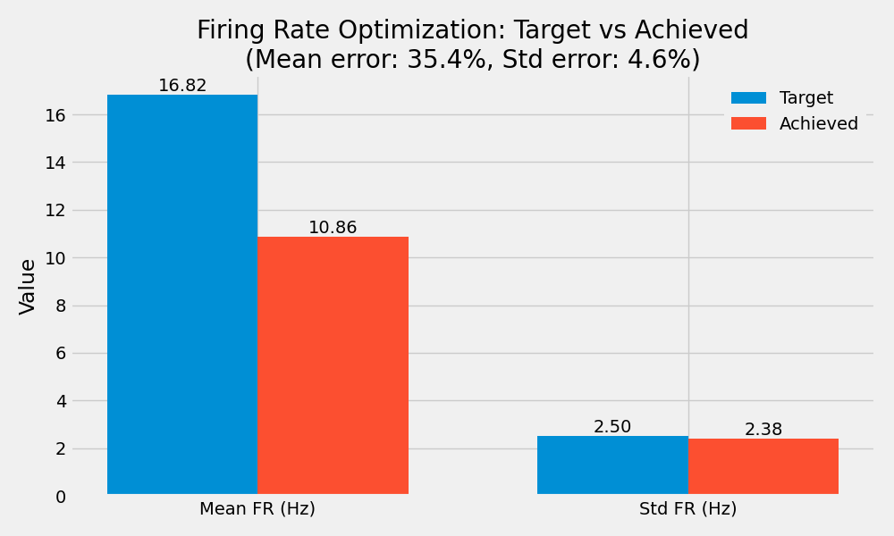

Note
Go to the end to download the full example code.
Optimizing Descending Drive Parameters for Target Firing Rates#
This example demonstrates parameter optimization for descending drive networks using Optuna. The goal is to find network parameters (number of DD neurons, connection probability, drive frequency) that produce motor neuron firing patterns matching target physiological characteristics.
Note
Multi-objective optimization is essential for tuning complex neural network models because:
Multiple parameters interact non-linearly (DD neurons, connectivity, synaptic weights)
Target outputs have multiple constraints (mean firing rate, variability, recruitment)
Manual parameter tuning is time-consuming and may miss optimal combinations
Systematic search ensures reproducible, well-documented parameter choices
Important
Descending Drive (DD) Networks represent cortical input to spinal motor neurons. Key parameters:
dd_neurons: Population size (affects input diversity and convergence)conn_probability: Synaptic connectivity (affects drive strength and correlation)dd_drive__Hz: Input frequency (controls baseline excitation level)gamma_shape: Variability of Poisson processes (affects temporal patterns)
Optimization Objective: Match target motor neuron firing rate statistics while maintaining biologically plausible network parameters.
Import Libraries#
For optimization, we need:
Optuna: Bayesian optimization framework with TPE sampler
NEURON: Biophysical simulation engine
MyoGen: Motor neuron pools and network connectivity
import json
import os
os.environ["MPLBACKEND"] = "Agg"
if "DISPLAY" in os.environ:
del os.environ["DISPLAY"]
import warnings
from pathlib import Path
import joblib
import matplotlib.pyplot as plt
import numpy as np
import optuna
import quantities as pq
from neo import Segment, SpikeTrain
from neuron import h
from myogen import RANDOM_GENERATOR
from myogen.simulator import RecruitmentThresholds
from myogen.simulator.neuron import Network
from myogen.simulator.neuron.populations import AlphaMN__Pool, DescendingDrive__Pool
from myogen.utils.helper import calculate_firing_rate_statistics, get_gamma_shape_for_mvc
from myogen.utils.nmodl import load_nmodl_mechanisms
warnings.filterwarnings("ignore")
plt.style.use("fivethirtyeight")
Define Optimization Parameters#
Set target firing rate characteristics and optimization constraints. These values are based on physiological measurements from motor control studies.
# Target motor neuron firing statistics (from experimental data)
TARGET_FR_MEAN__HZ = 16.82 # Mean firing rate during isometric contraction
TARGET_FR_STD__HZ = 2.5 # Standard deviation across motor unit pool
# Network parameter search space
N_DD_NEURONS_MIN = 100 # Minimum descending drive population size
N_DD_NEURONS_MAX = 1000 # Maximum descending drive population size
# Fixed simulation parameters
N_MOTOR_UNITS = 100 # Motor neuron pool size
SIMULATION_TIME_MS = 3000.0 # Simulation duration (ms)
TIMESTEP_MS = 0.1 # Integration timestep (ms)
GAMMA_SHAPE = 3.0 # Fixed gamma shape for DD variability
SYNAPTIC_WEIGHT = 0.05 # DD→MN synaptic weight (µS)
# Optimization settings
N_TRIALS = 25 # Number of optimization trials (increase for production use)
TIMEOUT_SECONDS = 36000 # Maximum optimization time (10 hours)
# Gfluctdv (fluctuating conductance noise) parameters
ENABLE_GFLUCTDV = False # Enable membrane noise in motor neurons
GFLUCTDV_NOISE_MIN = 5e-6 # Minimum noise amplitude (S/cm²)
GFLUCTDV_NOISE_MAX = 3e-5 # Maximum noise amplitude (S/cm²)
# Results directory - use project root to share across examples
# Handle both manual execution and Sphinx Gallery (where __file__ is not defined)
try:
_script_dir = Path(__file__).parent
except NameError:
_script_dir = Path.cwd()
RESULTS_DIR = _script_dir.parent.parent / "results" / "dd_optimization"
RESULTS_DIR.mkdir(exist_ok=True, parents=True)
Load NEURON Mechanisms#
Compile and load the custom NMODL mechanisms needed for biophysical simulation.
load_nmodl_mechanisms()
h.secondorder = 2 # Use Crank-Nicolson integration (second-order accurate)
Define Objective Function#
The objective function evaluates network performance for a given parameter set. Optuna will minimize this function to find optimal parameters.
Optimization variables (suggested by Optuna each trial):
dd_neurons: Number of descending drive neurons [100-1000]conn_probability: DD→MN connection probability [0.1-1.0]dd_drive__Hz: Input drive frequency [5-1000 Hz]gfluctdv_noise_amplitude: Membrane noise level (if enabled)
Objective components:
mean_error: Normalized deviation from target mean firing ratestd_error: Normalized deviation from target firing rate stdplausibility_penalty: Soft constraints on biologically unrealistic parameters
def objective(trial):
"""
Optuna single-objective optimization function.
Optimizes network parameters to match target firing rate statistics
while preferring biologically plausible configurations.
Parameters
----------
trial : optuna.Trial
Current optimization trial with parameter suggestions
Returns
-------
float
Objective value (lower is better)
"""
try:
# Suggest parameters for this trial
dd_neurons = trial.suggest_int("dd_neurons", N_DD_NEURONS_MIN, N_DD_NEURONS_MAX)
conn_probability = trial.suggest_float("conn_prob", 0.1, 1.0)
dd_drive__Hz = trial.suggest_float("dd_drive", 5.0, 1000.0)
# Use fixed gamma shape (not optimized)
gamma_shape = get_gamma_shape_for_mvc(100, mvc_shape_value=GAMMA_SHAPE)
# Optional: Gfluctdv noise amplitude
if ENABLE_GFLUCTDV:
gfluctdv_noise_amplitude = trial.suggest_float(
"gfluctdv_noise_amplitude", GFLUCTDV_NOISE_MIN, GFLUCTDV_NOISE_MAX
)
else:
gfluctdv_noise_amplitude = 0.0
# Create recruitment thresholds for motor unit pool
recruitment_thresholds, _ = RecruitmentThresholds(
N=N_MOTOR_UNITS,
recruitment_range__ratio=100,
deluca__slope=5,
konstantin__max_threshold__ratio=1.0,
mode="combined",
)
# Create motor neuron pool
motor_neuron_pool = AlphaMN__Pool(
recruitment_thresholds__array=recruitment_thresholds,
config_file="alpha_mn_default.yaml",
)
# Apply Gfluctdv noise if enabled
if ENABLE_GFLUCTDV:
for cell in motor_neuron_pool:
cell.insert_Gfluctdv()
for d in cell.dend:
d.std_e_Gfluctdv = gfluctdv_noise_amplitude
d.std_i_Gfluctdv = gfluctdv_noise_amplitude
# Create descending drive pool
descending_drive_pool = DescendingDrive__Pool(
n=dd_neurons,
timestep__ms=TIMESTEP_MS * pq.ms,
process_type="gamma",
shape=gamma_shape, # type: ignore
)
# Build network with synaptic connections
network = Network({"DD": descending_drive_pool, "aMN": motor_neuron_pool})
network.connect(
source="DD",
target="aMN",
probability=conn_probability,
weight__uS=SYNAPTIC_WEIGHT * pq.uS,
)
network.connect_from_external(source="cortical_input", target="DD", weight__uS=1.0 * pq.uS)
dd_netcons = network.get_netcons("cortical_input", "DD")
# Setup spike recording
mn_spike_recorders = []
for cell in motor_neuron_pool:
spike_recorder = h.Vector()
nc = h.NetCon(cell.soma(0.5)._ref_v, None, sec=cell.soma)
nc.threshold = 50
nc.record(spike_recorder)
mn_spike_recorders.append(spike_recorder)
# Generate constant drive signal with small noise
time_points = int(SIMULATION_TIME_MS / TIMESTEP_MS)
drive_signal = np.ones(time_points) * dd_drive__Hz + np.clip(
RANDOM_GENERATOR.normal(0, 1.0, size=time_points), 0, None
)
# Run NEURON simulation
h.load_file("stdrun.hoc")
h.dt = TIMESTEP_MS
h.tstop = SIMULATION_TIME_MS
# Initialize voltages
for section, voltage in zip(*motor_neuron_pool.get_initialization_data()):
section.v = voltage
for section, voltage in zip(*descending_drive_pool.get_initialization_data()):
section.v = voltage
h.finitialize()
# Simulation loop with DD drive injection
step_counter = 0
while h.t < h.tstop:
current_drive = drive_signal[min(step_counter, len(drive_signal) - 1)]
for dd_cell in descending_drive_pool:
if dd_cell.integrate(current_drive):
if h.t < h.tstop:
dd_netcons[dd_cell.pool__ID].event(h.t + 1)
h.fadvance()
step_counter += 1
# Convert spike data to Neo format
mn_segment = Segment(name="Motor Neurons")
dt_s = h.dt / 1000.0
mn_segment.spiketrains = [
SpikeTrain(
recorder.as_numpy() / 1000 * pq.s,
t_stop=SIMULATION_TIME_MS / 1000 * pq.s,
sampling_rate=(1 / dt_s * (pq.Hz)),
sampling_period=dt_s * pq.s,
name=f"MN_{i}",
)
for i, recorder in enumerate(mn_spike_recorders)
]
# Calculate firing rate statistics
stats = calculate_firing_rate_statistics(mn_segment.spiketrains)
n_active: int = int(stats["n_active"])
# Penalty for insufficient recruitment
if n_active < 10:
return 1000.0
fr_mean: float = float(stats["FR_mean"])
fr_std: float = float(stats["FR_std"])
# Normalized errors
mean_error = abs(fr_mean - TARGET_FR_MEAN__HZ) / TARGET_FR_MEAN__HZ
std_error = abs(fr_std - TARGET_FR_STD__HZ) / TARGET_FR_STD__HZ
# Biological plausibility penalties
plausibility_penalty = 0.0
if conn_probability > 0.7: # Very high connectivity is less realistic
plausibility_penalty += 0.1 * (conn_probability - 0.7)
if dd_neurons > 800: # Excessive neurons are less common
plausibility_penalty += 0.1 * ((dd_neurons - 800) / 200)
# Combined objective (minimize)
objective_value = mean_error + std_error + plausibility_penalty
# Store trial metadata
trial.set_user_attr("n_active", n_active)
trial.set_user_attr("FR_mean", fr_mean)
trial.set_user_attr("FR_std", fr_std)
trial.set_user_attr("mean_error", float(mean_error))
trial.set_user_attr("std_error", float(std_error))
trial.set_user_attr("plausibility_penalty", float(plausibility_penalty))
trial.set_user_attr("objective_value", float(objective_value))
trial.set_user_attr("dd_neurons", dd_neurons)
trial.set_user_attr("conn_probability", float(conn_probability))
trial.set_user_attr("synaptic_weight", float(SYNAPTIC_WEIGHT))
trial.set_user_attr("dd_drive__Hz", float(dd_drive__Hz))
trial.set_user_attr("gamma_shape", float(gamma_shape))
trial.set_user_attr("gfluctdv_enabled", ENABLE_GFLUCTDV)
trial.set_user_attr("gfluctdv_noise_amplitude", float(gfluctdv_noise_amplitude))
# Progress reporting
if trial.number % 1 == 0:
print(
f"Trial {trial.number}: FR={fr_mean:.1f}±{fr_std:.1f}Hz, "
f"obj={objective_value:.3f} (mean_err={mean_error:.3f}, std_err={std_error:.3f})"
)
return objective_value
except Exception as e:
print(f"Trial {trial.number} failed with error: {e}")
return 1000.0
Run Optimization Study#
Create an Optuna study and optimize parameters using Tree-structured Parzen Estimator (TPE). TPE is a Bayesian optimization algorithm that builds probabilistic models of the objective function.
print(
f"\nOptimizing network parameters | "
f"Target: {TARGET_FR_MEAN__HZ:.1f}±{TARGET_FR_STD__HZ:.1f}Hz | "
f"Trials: {N_TRIALS}\n"
)
# Create or load existing study (allows resuming interrupted optimization)
storage_name = f"sqlite:///{RESULTS_DIR}/optuna_dd_optimization.db"
study = optuna.create_study(
direction="minimize", # Minimize objective value
sampler=optuna.samplers.TPESampler(seed=42, multivariate=True),
study_name="dd_optimization",
storage=storage_name,
load_if_exists=True,
)
# Run optimization
study.optimize(objective, n_trials=N_TRIALS, timeout=TIMEOUT_SECONDS, show_progress_bar=True)
Optimizing network parameters | Target: 16.8±2.5Hz | Trials: 25
[I 2026-01-15 12:14:08,516] Using an existing study with name 'dd_optimization' instead of creating a new one.
0%| | 0/25 [00:00<?, ?it/s]Trial 1: FR=234.5±196.0Hz, obj=90.384 (mean_err=12.940, std_err=77.418)
[I 2026-01-15 12:14:26,421] Trial 1 finished with value: 90.3837021157746 and parameters: {'dd_neurons': 437, 'conn_prob': 0.9556428757689246, 'dd_drive': 733.3339721023481}. Best is trial 1 with value: 90.3837021157746.
0%| | 0/25 [00:17<?, ?it/s]
Best trial: 1. Best value: 90.3837: 0%| | 0/25 [00:17<?, ?it/s]
Best trial: 1. Best value: 90.3837: 4%|▍ | 1/25 [00:17<07:09, 17.90s/it]
Best trial: 1. Best value: 90.3837: 4%|▍ | 1/25 [00:17<07:09, 17.90s/it, 17.90/36000 seconds]Trial 2: FR=37.7±6.1Hz, obj=2.690 (mean_err=1.241, std_err=1.449)
[I 2026-01-15 12:14:36,223] Trial 2 finished with value: 2.68998819796297 and parameters: {'dd_neurons': 639, 'conn_prob': 0.24041677639819287, 'dd_drive': 160.21454773452163}. Best is trial 2 with value: 2.68998819796297.
Best trial: 1. Best value: 90.3837: 4%|▍ | 1/25 [00:27<07:09, 17.90s/it, 17.90/36000 seconds]
Best trial: 2. Best value: 2.68999: 4%|▍ | 1/25 [00:27<07:09, 17.90s/it, 17.90/36000 seconds]
Best trial: 2. Best value: 2.68999: 8%|▊ | 2/25 [00:27<05:02, 13.14s/it, 17.90/36000 seconds]
Best trial: 2. Best value: 2.68999: 8%|▊ | 2/25 [00:27<05:02, 13.14s/it, 27.70/36000 seconds]Trial 3: FR=86.8±7.4Hz, obj=6.123 (mean_err=4.159, std_err=1.946)
[I 2026-01-15 12:14:42,913] Trial 3 finished with value: 6.123288089643303 and parameters: {'dd_neurons': 152, 'conn_prob': 0.8795585311974417, 'dd_drive': 603.1094366844927}. Best is trial 2 with value: 2.68998819796297.
Best trial: 2. Best value: 2.68999: 8%|▊ | 2/25 [00:34<05:02, 13.14s/it, 27.70/36000 seconds]
Best trial: 2. Best value: 2.68999: 8%|▊ | 2/25 [00:34<05:02, 13.14s/it, 27.70/36000 seconds]
Best trial: 2. Best value: 2.68999: 12%|█▏ | 3/25 [00:34<03:44, 10.19s/it, 27.70/36000 seconds]
Best trial: 2. Best value: 2.68999: 12%|█▏ | 3/25 [00:34<03:44, 10.19s/it, 34.39/36000 seconds]Trial 4: FR=88.2±9.4Hz, obj=7.023 (mean_err=4.247, std_err=2.776)
[I 2026-01-15 12:15:04,084] Trial 4 finished with value: 7.0230437322651635 and parameters: {'dd_neurons': 737, 'conn_prob': 0.1185260448662222, 'dd_drive': 970.0603029011844}. Best is trial 2 with value: 2.68998819796297.
Best trial: 2. Best value: 2.68999: 12%|█▏ | 3/25 [00:55<03:44, 10.19s/it, 34.39/36000 seconds]
Best trial: 2. Best value: 2.68999: 12%|█▏ | 3/25 [00:55<03:44, 10.19s/it, 34.39/36000 seconds]
Best trial: 2. Best value: 2.68999: 16%|█▌ | 4/25 [00:55<05:05, 14.53s/it, 34.39/36000 seconds]
Best trial: 2. Best value: 2.68999: 16%|█▌ | 4/25 [00:55<05:05, 14.53s/it, 55.56/36000 seconds]Trial 5: FR=60.0±6.2Hz, obj=4.072 (mean_err=2.565, std_err=1.482)
[I 2026-01-15 12:15:15,266] Trial 5 finished with value: 4.071557112815144 and parameters: {'dd_neurons': 850, 'conn_prob': 0.29110519961044856, 'dd_drive': 185.9158423710651}. Best is trial 2 with value: 2.68998819796297.
Best trial: 2. Best value: 2.68999: 16%|█▌ | 4/25 [01:06<05:05, 14.53s/it, 55.56/36000 seconds]
Best trial: 2. Best value: 2.68999: 16%|█▌ | 4/25 [01:06<05:05, 14.53s/it, 55.56/36000 seconds]
Best trial: 2. Best value: 2.68999: 20%|██ | 5/25 [01:06<04:26, 13.32s/it, 55.56/36000 seconds]
Best trial: 2. Best value: 2.68999: 20%|██ | 5/25 [01:06<04:26, 13.32s/it, 66.74/36000 seconds]Trial 6: FR=64.4±7.0Hz, obj=4.647 (mean_err=2.832, std_err=1.816)
[I 2026-01-15 12:15:22,349] Trial 6 finished with value: 4.647165818189576 and parameters: {'dd_neurons': 265, 'conn_prob': 0.373818018663584, 'dd_drive': 527.1326494740766}. Best is trial 2 with value: 2.68998819796297.
Best trial: 2. Best value: 2.68999: 20%|██ | 5/25 [01:13<04:26, 13.32s/it, 66.74/36000 seconds]
Best trial: 2. Best value: 2.68999: 20%|██ | 5/25 [01:13<04:26, 13.32s/it, 66.74/36000 seconds]
Best trial: 2. Best value: 2.68999: 24%|██▍ | 6/25 [01:13<03:32, 11.20s/it, 66.74/36000 seconds]
Best trial: 2. Best value: 2.68999: 24%|██▍ | 6/25 [01:13<03:32, 11.20s/it, 73.83/36000 seconds]Trial 7: FR=104.6±9.4Hz, obj=7.979 (mean_err=5.220, std_err=2.758)
[I 2026-01-15 12:15:34,924] Trial 7 finished with value: 7.978951188591846 and parameters: {'dd_neurons': 489, 'conn_prob': 0.36210622617823773, 'dd_drive': 613.7936302487676}. Best is trial 2 with value: 2.68998819796297.
Best trial: 2. Best value: 2.68999: 24%|██▍ | 6/25 [01:26<03:32, 11.20s/it, 73.83/36000 seconds]
Best trial: 2. Best value: 2.68999: 24%|██▍ | 6/25 [01:26<03:32, 11.20s/it, 73.83/36000 seconds]
Best trial: 2. Best value: 2.68999: 28%|██▊ | 7/25 [01:26<03:29, 11.65s/it, 73.83/36000 seconds]
Best trial: 2. Best value: 2.68999: 28%|██▊ | 7/25 [01:26<03:29, 11.65s/it, 86.40/36000 seconds]Trial 8: FR=43.7±5.6Hz, obj=2.838 (mean_err=1.596, std_err=1.242)
[I 2026-01-15 12:15:40,285] Trial 8 finished with value: 2.8380293717546197 and parameters: {'dd_neurons': 225, 'conn_prob': 0.3629301836816964, 'dd_drive': 369.53003407722326}. Best is trial 2 with value: 2.68998819796297.
Best trial: 2. Best value: 2.68999: 28%|██▊ | 7/25 [01:31<03:29, 11.65s/it, 86.40/36000 seconds]
Best trial: 2. Best value: 2.68999: 28%|██▊ | 7/25 [01:31<03:29, 11.65s/it, 86.40/36000 seconds]
Best trial: 2. Best value: 2.68999: 32%|███▏ | 8/25 [01:31<02:44, 9.65s/it, 86.40/36000 seconds]
Best trial: 2. Best value: 2.68999: 32%|███▏ | 8/25 [01:31<02:44, 9.65s/it, 91.76/36000 seconds]Trial 9: FR=90.1±7.5Hz, obj=6.359 (mean_err=4.359, std_err=1.989)
[I 2026-01-15 12:15:49,996] Trial 9 finished with value: 6.358575871414175 and parameters: {'dd_neurons': 510, 'conn_prob': 0.8066583652537123, 'dd_drive': 203.67541324756795}. Best is trial 2 with value: 2.68998819796297.
Best trial: 2. Best value: 2.68999: 32%|███▏ | 8/25 [01:41<02:44, 9.65s/it, 91.76/36000 seconds]
Best trial: 2. Best value: 2.68999: 32%|███▏ | 8/25 [01:41<02:44, 9.65s/it, 91.76/36000 seconds]
Best trial: 2. Best value: 2.68999: 36%|███▌ | 9/25 [01:41<02:34, 9.67s/it, 91.76/36000 seconds]
Best trial: 2. Best value: 2.68999: 36%|███▌ | 9/25 [01:41<02:34, 9.67s/it, 101.47/36000 seconds]Trial 10: FR=30.2±5.2Hz, obj=1.865 (mean_err=0.796, std_err=1.069)
[I 2026-01-15 12:15:56,947] Trial 10 finished with value: 1.8651486994913002 and parameters: {'dd_neurons': 563, 'conn_prob': 0.6331731119758383, 'dd_drive': 51.218160656397735}. Best is trial 10 with value: 1.8651486994913002.
Best trial: 2. Best value: 2.68999: 36%|███▌ | 9/25 [01:48<02:34, 9.67s/it, 101.47/36000 seconds]
Best trial: 10. Best value: 1.86515: 36%|███▌ | 9/25 [01:48<02:34, 9.67s/it, 101.47/36000 seconds]
Best trial: 10. Best value: 1.86515: 40%|████ | 10/25 [01:48<02:12, 8.83s/it, 101.47/36000 seconds]
Best trial: 10. Best value: 1.86515: 40%|████ | 10/25 [01:48<02:12, 8.83s/it, 108.42/36000 seconds]Trial 11: FR=130.8±79.5Hz, obj=37.615 (mean_err=6.776, std_err=30.815)
[I 2026-01-15 12:16:11,582] Trial 11 finished with value: 37.61457348298879 and parameters: {'dd_neurons': 827, 'conn_prob': 0.799513413248344, 'dd_drive': 196.77676310377643}. Best is trial 10 with value: 1.8651486994913002.
Best trial: 10. Best value: 1.86515: 40%|████ | 10/25 [02:03<02:12, 8.83s/it, 108.42/36000 seconds]
Best trial: 10. Best value: 1.86515: 40%|████ | 10/25 [02:03<02:12, 8.83s/it, 108.42/36000 seconds]
Best trial: 10. Best value: 1.86515: 44%|████▍ | 11/25 [02:03<02:28, 10.61s/it, 108.42/36000 seconds]
Best trial: 10. Best value: 1.86515: 44%|████▍ | 11/25 [02:03<02:28, 10.61s/it, 123.06/36000 seconds]Trial 12: FR=3.6±2.2Hz, obj=0.891 (mean_err=0.785, std_err=0.106)
[I 2026-01-15 12:16:17,622] Trial 12 finished with value: 0.8912533666992299 and parameters: {'dd_neurons': 632, 'conn_prob': 0.2027038856309737, 'dd_drive': 32.67355703031478}. Best is trial 12 with value: 0.8912533666992299.
Best trial: 10. Best value: 1.86515: 44%|████▍ | 11/25 [02:09<02:28, 10.61s/it, 123.06/36000 seconds]
Best trial: 12. Best value: 0.891253: 44%|████▍ | 11/25 [02:09<02:28, 10.61s/it, 123.06/36000 seconds]
Best trial: 12. Best value: 0.891253: 48%|████▊ | 12/25 [02:09<01:59, 9.22s/it, 123.06/36000 seconds]
Best trial: 12. Best value: 0.891253: 48%|████▊ | 12/25 [02:09<01:59, 9.22s/it, 129.10/36000 seconds]Trial 13: FR=26.1±3.3Hz, obj=0.860 (mean_err=0.551, std_err=0.304)
[I 2026-01-15 12:16:21,540] Trial 13 finished with value: 0.8595710962946104 and parameters: {'dd_neurons': 189, 'conn_prob': 0.7436526509771155, 'dd_drive': 107.6606986145913}. Best is trial 13 with value: 0.8595710962946104.
Best trial: 12. Best value: 0.891253: 48%|████▊ | 12/25 [02:13<01:59, 9.22s/it, 129.10/36000 seconds]
Best trial: 13. Best value: 0.859571: 48%|████▊ | 12/25 [02:13<01:59, 9.22s/it, 129.10/36000 seconds]
Best trial: 13. Best value: 0.859571: 52%|█████▏ | 13/25 [02:13<01:31, 7.61s/it, 129.10/36000 seconds]
Best trial: 13. Best value: 0.859571: 52%|█████▏ | 13/25 [02:13<01:31, 7.61s/it, 133.02/36000 seconds]Trial 14: FR=32.7±4.8Hz, obj=1.859 (mean_err=0.945, std_err=0.911)
[I 2026-01-15 12:16:25,206] Trial 14 finished with value: 1.8592626220877098 and parameters: {'dd_neurons': 127, 'conn_prob': 0.7350413951529284, 'dd_drive': 218.4243128968272}. Best is trial 13 with value: 0.8595710962946104.
Best trial: 13. Best value: 0.859571: 52%|█████▏ | 13/25 [02:16<01:31, 7.61s/it, 133.02/36000 seconds]
Best trial: 13. Best value: 0.859571: 52%|█████▏ | 13/25 [02:16<01:31, 7.61s/it, 133.02/36000 seconds]
Best trial: 13. Best value: 0.859571: 56%|█████▌ | 14/25 [02:16<01:10, 6.42s/it, 133.02/36000 seconds]
Best trial: 13. Best value: 0.859571: 56%|█████▌ | 14/25 [02:16<01:10, 6.42s/it, 136.68/36000 seconds]
[I 2026-01-15 12:16:28,846] Trial 15 finished with value: 1000.0 and parameters: {'dd_neurons': 285, 'conn_prob': 0.2251953201560079, 'dd_drive': 33.598377793099075}. Best is trial 13 with value: 0.8595710962946104.
Best trial: 13. Best value: 0.859571: 56%|█████▌ | 14/25 [02:20<01:10, 6.42s/it, 136.68/36000 seconds]
Best trial: 13. Best value: 0.859571: 56%|█████▌ | 14/25 [02:20<01:10, 6.42s/it, 136.68/36000 seconds]
Best trial: 13. Best value: 0.859571: 60%|██████ | 15/25 [02:20<00:55, 5.58s/it, 136.68/36000 seconds]
Best trial: 13. Best value: 0.859571: 60%|██████ | 15/25 [02:20<00:55, 5.58s/it, 140.32/36000 seconds]Trial 16: FR=37.9±5.6Hz, obj=2.537 (mean_err=1.251, std_err=1.257)
[I 2026-01-15 12:16:33,853] Trial 16 finished with value: 2.537022395066593 and parameters: {'dd_neurons': 247, 'conn_prob': 0.9883870136118017, 'dd_drive': 101.9221008068317}. Best is trial 13 with value: 0.8595710962946104.
Best trial: 13. Best value: 0.859571: 60%|██████ | 15/25 [02:25<00:55, 5.58s/it, 140.32/36000 seconds]
Best trial: 13. Best value: 0.859571: 60%|██████ | 15/25 [02:25<00:55, 5.58s/it, 140.32/36000 seconds]
Best trial: 13. Best value: 0.859571: 64%|██████▍ | 16/25 [02:25<00:48, 5.41s/it, 140.32/36000 seconds]
Best trial: 13. Best value: 0.859571: 64%|██████▍ | 16/25 [02:25<00:48, 5.41s/it, 145.33/36000 seconds]
[I 2026-01-15 12:16:40,345] Trial 17 finished with value: 1000.0 and parameters: {'dd_neurons': 699, 'conn_prob': 0.1163681670380706, 'dd_drive': 41.42729159294581}. Best is trial 13 with value: 0.8595710962946104.
Best trial: 13. Best value: 0.859571: 64%|██████▍ | 16/25 [02:31<00:48, 5.41s/it, 145.33/36000 seconds]
Best trial: 13. Best value: 0.859571: 64%|██████▍ | 16/25 [02:31<00:48, 5.41s/it, 145.33/36000 seconds]
Best trial: 13. Best value: 0.859571: 68%|██████▊ | 17/25 [02:31<00:45, 5.73s/it, 145.33/36000 seconds]
Best trial: 13. Best value: 0.859571: 68%|██████▊ | 17/25 [02:31<00:45, 5.73s/it, 151.82/36000 seconds]Trial 18: FR=3.1±1.6Hz, obj=1.189 (mean_err=0.818, std_err=0.372)
[I 2026-01-15 12:16:44,075] Trial 18 finished with value: 1.1894773889472505 and parameters: {'dd_neurons': 244, 'conn_prob': 0.49701434068974637, 'dd_drive': 34.14678256500264}. Best is trial 13 with value: 0.8595710962946104.
Best trial: 13. Best value: 0.859571: 68%|██████▊ | 17/25 [02:35<00:45, 5.73s/it, 151.82/36000 seconds]
Best trial: 13. Best value: 0.859571: 68%|██████▊ | 17/25 [02:35<00:45, 5.73s/it, 151.82/36000 seconds]
Best trial: 13. Best value: 0.859571: 72%|███████▏ | 18/25 [02:35<00:35, 5.13s/it, 151.82/36000 seconds]
Best trial: 13. Best value: 0.859571: 72%|███████▏ | 18/25 [02:35<00:35, 5.13s/it, 155.55/36000 seconds]Trial 19: FR=86.8±7.4Hz, obj=6.131 (mean_err=4.159, std_err=1.972)
[I 2026-01-15 12:16:53,067] Trial 19 finished with value: 6.131094007236267 and parameters: {'dd_neurons': 397, 'conn_prob': 0.5816522415604415, 'dd_drive': 341.3148169033072}. Best is trial 13 with value: 0.8595710962946104.
Best trial: 13. Best value: 0.859571: 72%|███████▏ | 18/25 [02:44<00:35, 5.13s/it, 155.55/36000 seconds]
Best trial: 13. Best value: 0.859571: 72%|███████▏ | 18/25 [02:44<00:35, 5.13s/it, 155.55/36000 seconds]
Best trial: 13. Best value: 0.859571: 76%|███████▌ | 19/25 [02:44<00:37, 6.29s/it, 155.55/36000 seconds]
Best trial: 13. Best value: 0.859571: 76%|███████▌ | 19/25 [02:44<00:37, 6.29s/it, 164.54/36000 seconds]Trial 20: FR=28.2±5.8Hz, obj=1.991 (mean_err=0.677, std_err=1.314)
[I 2026-01-15 12:17:00,511] Trial 20 finished with value: 1.9912278690709182 and parameters: {'dd_neurons': 386, 'conn_prob': 0.10546961333508002, 'dd_drive': 424.8623998947541}. Best is trial 13 with value: 0.8595710962946104.
Best trial: 13. Best value: 0.859571: 76%|███████▌ | 19/25 [02:51<00:37, 6.29s/it, 164.54/36000 seconds]
Best trial: 13. Best value: 0.859571: 76%|███████▌ | 19/25 [02:51<00:37, 6.29s/it, 164.54/36000 seconds]
Best trial: 13. Best value: 0.859571: 80%|████████ | 20/25 [02:51<00:33, 6.64s/it, 164.54/36000 seconds]
Best trial: 13. Best value: 0.859571: 80%|████████ | 20/25 [02:51<00:33, 6.64s/it, 171.99/36000 seconds]Trial 21: FR=244.2±208.9Hz, obj=96.064 (mean_err=13.518, std_err=82.540)
[I 2026-01-15 12:17:30,378] Trial 21 finished with value: 96.06389537793407 and parameters: {'dd_neurons': 812, 'conn_prob': 0.6877028441297923, 'dd_drive': 822.0397670760491}. Best is trial 13 with value: 0.8595710962946104.
Best trial: 13. Best value: 0.859571: 80%|████████ | 20/25 [03:21<00:33, 6.64s/it, 171.99/36000 seconds]
Best trial: 13. Best value: 0.859571: 80%|████████ | 20/25 [03:21<00:33, 6.64s/it, 171.99/36000 seconds]
Best trial: 13. Best value: 0.859571: 84%|████████▍ | 21/25 [03:21<00:54, 13.61s/it, 171.99/36000 seconds]
Best trial: 13. Best value: 0.859571: 84%|████████▍ | 21/25 [03:21<00:54, 13.61s/it, 201.86/36000 seconds]Trial 22: FR=10.7±3.0Hz, obj=0.553 (mean_err=0.363, std_err=0.190)
[I 2026-01-15 12:17:33,737] Trial 22 finished with value: 0.5528216961035002 and parameters: {'dd_neurons': 184, 'conn_prob': 0.4939293797994684, 'dd_drive': 69.60861908369148}. Best is trial 22 with value: 0.5528216961035002.
Best trial: 13. Best value: 0.859571: 84%|████████▍ | 21/25 [03:25<00:54, 13.61s/it, 201.86/36000 seconds]
Best trial: 22. Best value: 0.552822: 84%|████████▍ | 21/25 [03:25<00:54, 13.61s/it, 201.86/36000 seconds]
Best trial: 22. Best value: 0.552822: 88%|████████▊ | 22/25 [03:25<00:31, 10.53s/it, 201.86/36000 seconds]
Best trial: 22. Best value: 0.552822: 88%|████████▊ | 22/25 [03:25<00:31, 10.53s/it, 205.21/36000 seconds]
[I 2026-01-15 12:17:37,149] Trial 23 finished with value: 1000.0 and parameters: {'dd_neurons': 225, 'conn_prob': 0.6225579547902492, 'dd_drive': 12.255596657755255}. Best is trial 22 with value: 0.5528216961035002.
Best trial: 22. Best value: 0.552822: 88%|████████▊ | 22/25 [03:28<00:31, 10.53s/it, 205.21/36000 seconds]
Best trial: 22. Best value: 0.552822: 88%|████████▊ | 22/25 [03:28<00:31, 10.53s/it, 205.21/36000 seconds]
Best trial: 22. Best value: 0.552822: 92%|█████████▏| 23/25 [03:28<00:16, 8.40s/it, 205.21/36000 seconds]
Best trial: 22. Best value: 0.552822: 92%|█████████▏| 23/25 [03:28<00:16, 8.40s/it, 208.63/36000 seconds]Trial 24: FR=23.6±5.3Hz, obj=1.526 (mean_err=0.406, std_err=1.120)
[I 2026-01-15 12:17:40,516] Trial 24 finished with value: 1.5262203183503917 and parameters: {'dd_neurons': 110, 'conn_prob': 0.5344958254559738, 'dd_drive': 242.8626502922196}. Best is trial 22 with value: 0.5528216961035002.
Best trial: 22. Best value: 0.552822: 92%|█████████▏| 23/25 [03:31<00:16, 8.40s/it, 208.63/36000 seconds]
Best trial: 22. Best value: 0.552822: 92%|█████████▏| 23/25 [03:31<00:16, 8.40s/it, 208.63/36000 seconds]
Best trial: 22. Best value: 0.552822: 96%|█████████▌| 24/25 [03:31<00:06, 6.89s/it, 208.63/36000 seconds]
Best trial: 22. Best value: 0.552822: 96%|█████████▌| 24/25 [03:31<00:06, 6.89s/it, 211.99/36000 seconds]
[I 2026-01-15 12:17:43,045] Trial 25 finished with value: 1000.0 and parameters: {'dd_neurons': 113, 'conn_prob': 0.33655994061642874, 'dd_drive': 59.2298820046616}. Best is trial 22 with value: 0.5528216961035002.
Best trial: 22. Best value: 0.552822: 96%|█████████▌| 24/25 [03:34<00:06, 6.89s/it, 211.99/36000 seconds]
Best trial: 22. Best value: 0.552822: 96%|█████████▌| 24/25 [03:34<00:06, 6.89s/it, 211.99/36000 seconds]
Best trial: 22. Best value: 0.552822: 100%|██████████| 25/25 [03:34<00:00, 5.58s/it, 211.99/36000 seconds]
Best trial: 22. Best value: 0.552822: 100%|██████████| 25/25 [03:34<00:00, 5.58s/it, 214.52/36000 seconds]
Best trial: 22. Best value: 0.552822: 100%|██████████| 25/25 [03:34<00:00, 8.58s/it, 214.52/36000 seconds]
Analyze Results#
Extract the best trial and display optimized parameters.
best_trial = study.best_trial
print(f"\nCompleted {len(study.trials)} trials")
print(
f"\nBest Trial {best_trial.number}: "
f"FR={best_trial.user_attrs.get('FR_mean'):.1f}±{best_trial.user_attrs.get('FR_std'):.1f}Hz | "
f"Objective={best_trial.value:.3f} | "
f"Drive={best_trial.user_attrs.get('dd_drive__Hz'):.1f}Hz | "
f"Neurons={best_trial.user_attrs.get('dd_neurons')} | "
f"Conn={best_trial.user_attrs.get('conn_probability'):.2f}"
)
Completed 26 trials
Best Trial 22: FR=10.7±3.0Hz | Objective=0.553 | Drive=69.6Hz | Neurons=184 | Conn=0.49
Save Optimized Parameters#
Store the best parameters in JSON format for use in production simulations.
def trial_to_dict(t):
"""Convert trial to dictionary of parameters."""
base_params = {
k: t.user_attrs.get(k)
for k in [
"FR_mean",
"FR_std",
"dd_neurons",
"conn_probability",
"dd_drive__Hz",
"gamma_shape",
"mean_error",
"std_error",
"plausibility_penalty",
"objective_value",
]
}
if ENABLE_GFLUCTDV:
base_params["gfluctdv_noise_amplitude"] = t.user_attrs.get("gfluctdv_noise_amplitude")
return base_params
results = {
"target": {
"FR_mean__Hz": TARGET_FR_MEAN__HZ,
"FR_std__Hz": TARGET_FR_STD__HZ,
},
"input_parameters": {
"gamma_shape": GAMMA_SHAPE,
"gfluctdv_enabled": ENABLE_GFLUCTDV,
},
"best_trial": trial_to_dict(best_trial),
}
json_path = RESULTS_DIR / "dd_optimized_params.json"
with open(json_path, "w") as f:
json.dump(results, f, indent=2)
joblib.dump(study, RESULTS_DIR / "study.pkl")
print(f"Saved optimized parameters: {json_path}\n")
Saved optimized parameters: /home/runner/work/MyoGen/MyoGen/results/dd_optimization/dd_optimized_params.json
Visualize Optimization History#
Plot the optimization trajectory showing how the objective value improved over trials.
# Get colors from the style
colors = plt.rcParams["axes.prop_cycle"].by_key()["color"]
fig = plt.figure(figsize=(14, 10))
gs = fig.add_gridspec(2, 2, hspace=0.3, wspace=0.3)
# Left column: Optimization progress and FR convergence (shared x-axis)
ax_obj = fig.add_subplot(gs[0, 0])
ax_fr = fig.add_subplot(gs[1, 0], sharex=ax_obj)
# Right column: Parameter exploration and drive distribution
ax_param = fig.add_subplot(gs[0, 1])
ax_drive = fig.add_subplot(gs[1, 1])
# 1. Objective value over trials (log scale)
trial_numbers = [t.number for t in study.trials]
objective_values = [t.value for t in study.trials]
ax_obj.plot(trial_numbers, objective_values, "o-", alpha=0.6, markersize=4, color=colors[0])
ax_obj.axhline(best_trial.value, linestyle="--", color=colors[1], label=f"Best: {best_trial.value:.3f}")
ax_obj.set_ylabel("Objective Value (log scale)")
ax_obj.set_title("Optimization Progress")
ax_obj.set_yscale("log")
ax_obj.legend(framealpha=1.0, edgecolor="none")
ax_obj.tick_params(labelbottom=False)
# 2. Firing rate convergence
fr_means = [t.user_attrs.get("FR_mean", None) for t in study.trials]
fr_stds = [t.user_attrs.get("FR_std", None) for t in study.trials]
ax_fr.plot(trial_numbers, fr_means, "o-", alpha=0.6, markersize=4, color=colors[0], label="Mean FR")
ax_fr.axhline(TARGET_FR_MEAN__HZ, linestyle="--", color=colors[1], label=f"Target: {TARGET_FR_MEAN__HZ:.1f}Hz")
ax_fr.fill_between(
trial_numbers,
TARGET_FR_MEAN__HZ - TARGET_FR_STD__HZ,
TARGET_FR_MEAN__HZ + TARGET_FR_STD__HZ,
alpha=0.2,
color=colors[1],
label="Target Range",
)
ax_fr.set_xlabel("Trial")
ax_fr.set_ylabel("Firing Rate (Hz)")
ax_fr.set_title("Firing Rate Convergence")
ax_fr.legend(framealpha=1.0, edgecolor="none")
# 3. Parameter exploration: DD neurons vs Connection probability
dd_neurons_vals = [t.params.get("dd_neurons", None) for t in study.trials]
conn_prob_vals = [t.params.get("conn_prob", None) for t in study.trials]
scatter = ax_param.scatter(dd_neurons_vals, conn_prob_vals, c=objective_values, s=50, alpha=0.6)
ax_param.scatter(
best_trial.params["dd_neurons"],
best_trial.params["conn_prob"],
s=200,
marker="*",
color=colors[3],
label="Best Trial",
)
ax_param.set_xlabel("DD Neurons")
ax_param.set_ylabel("Connection Probability")
ax_param.set_title("Parameter Space Exploration")
ax_param.legend(framealpha=1.0, edgecolor="none")
plt.colorbar(scatter, ax=ax_param, label="Objective Value")
# 4. Drive frequency distribution
dd_drive_vals = [t.params.get("dd_drive", None) for t in study.trials]
ax_drive.hist(dd_drive_vals, bins=30, alpha=0.7, color=colors[2])
ax_drive.axvline(
best_trial.params["dd_drive"],
linestyle="--",
color=colors[1],
label=f'Best: {best_trial.params["dd_drive"]:.1f}Hz',
)
ax_drive.set_xlabel("DD Drive Frequency (Hz)")
ax_drive.set_ylabel("Number of Trials")
ax_drive.set_title("Drive Frequency Distribution")
ax_drive.legend(framealpha=1.0, edgecolor="none")
plt.tight_layout()
plt.savefig(RESULTS_DIR / "optimization_history.png", dpi=150, bbox_inches="tight")
plt.show()

Compare Target vs Achieved#
Validate that the optimization successfully matched the target firing rate statistics.
fig, ax = plt.subplots(1, 1, figsize=(10, 6))
# Bar plot comparing target vs achieved
categories = ["Mean FR (Hz)", "Std FR (Hz)"]
targets = [TARGET_FR_MEAN__HZ, TARGET_FR_STD__HZ]
achieved = [
best_trial.user_attrs.get("FR_mean"),
best_trial.user_attrs.get("FR_std"),
]
x = np.arange(len(categories))
width = 0.35
bars1 = ax.bar(x - width / 2, targets, width, label="Target")
bars2 = ax.bar(x + width / 2, achieved, width, label="Achieved")
# Add value labels on bars
for bars in [bars1, bars2]:
for bar in bars:
height = bar.get_height()
ax.text(
bar.get_x() + bar.get_width() / 2.0,
height,
f"{height:.2f}",
ha="center",
va="bottom",
)
# Calculate percent errors
mean_error = abs(achieved[0] - targets[0]) / targets[0] * 100
std_error = abs(achieved[1] - targets[1]) / targets[1] * 100
ax.set_ylabel("Value")
ax.set_title(
f"Firing Rate Optimization: Target vs Achieved\n"
f"(Mean error: {mean_error:.1f}%, Std error: {std_error:.1f}%)"
)
ax.set_xticks(x)
ax.set_xticklabels(categories)
ax.legend(framealpha=1.0, edgecolor="none")
plt.tight_layout()
plt.savefig(RESULTS_DIR / "target_comparison.png", dpi=150, bbox_inches="tight")
plt.show()

Using Optimized Parameters#
Important
The optimized parameters can be loaded and used in production simulations:
import json
from pathlib import Path
# Load optimized parameters
with open("results/dd_optimization/dd_optimized_params.json") as f:
params = json.load(f)
# Extract best values
dd_neurons = int(params["best_trial"]["dd_neurons"])
conn_prob = params["best_trial"]["conn_probability"]
dd_drive_Hz = params["best_trial"]["dd_drive__Hz"]
# Use in your simulation
descending_drive_pool = DescendingDrive__Pool(n=dd_neurons, ...)
network.connect("DD", "aMN", probability=conn_prob, ...)
print("\n[DONE] Optimization complete!")
print(f"Best parameters saved to: {json_path}")
print(f"Full study saved to: {RESULTS_DIR / 'study.pkl'}")
[DONE] Optimization complete!
Best parameters saved to: /home/runner/work/MyoGen/MyoGen/results/dd_optimization/dd_optimized_params.json
Full study saved to: /home/runner/work/MyoGen/MyoGen/results/dd_optimization/study.pkl
Total running time of the script: (3 minutes 36.579 seconds)